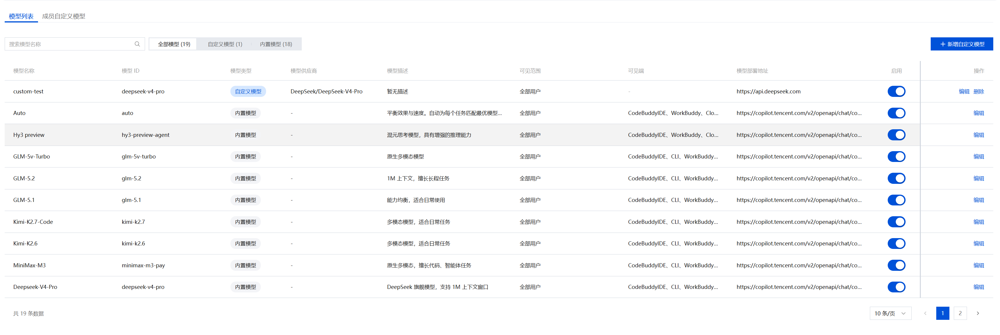
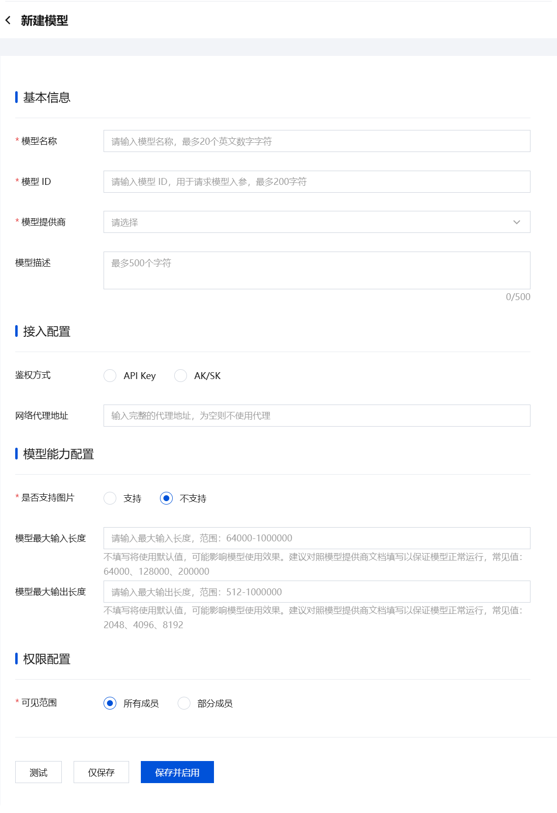
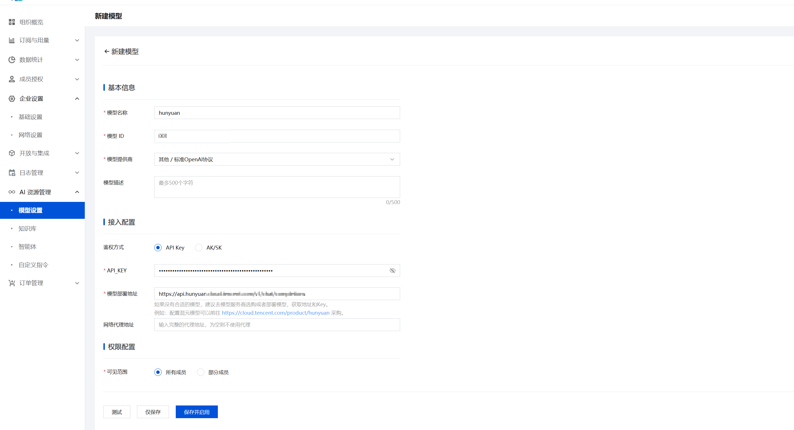
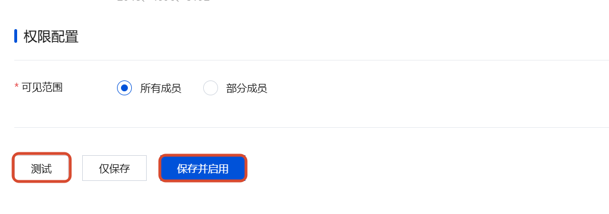
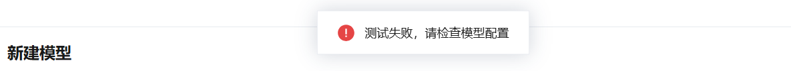
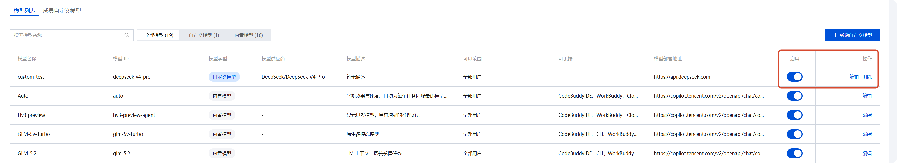
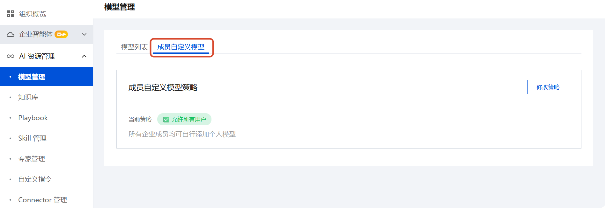

模型管理
在企业管理后台中部署和管控大模型，按角色或成员灵活分配，实现企业级模型治理。
模型部署
进入模型管理
登录 企业管理后台，在左侧导航栏 AI 资源管理 中选择 模型管理。
列表中展示所有模型，包含内置官方模型与企业自定义模型。

新增自定义模型
点击 新增自定义模型 进入配置页面。

配置项说明
以部署混元模型为例：

| 配置项 | 必填 | 说明 |
|---|---|---|
模型名称 | 是 | 自定义显示名称，方便成员识别 |
模型 ID | 是 | 对应模型提供商的 model 标识，需查阅该提供商的 API 文档获取 |
鉴权方式 | 是 | 选择 API Key 或 AK/SK，取决于模型提供商支持的认证方式和企业安全要求 |
模型部署地址 | 是 | 模型提供商的 API 基础地址（base_url） |
API Key | 条件必填 | 鉴权方式为 API Key 时需填写 |
Secret ID / Secret Key | 条件必填 | 鉴权方式为 AK/SK 时需填写，可从服务商控制台获取 |
鉴权方式对比
| 方式 | 说明 |
|---|---|
API Key | 通过单一令牌进行身份验证，Key 随请求明文传输 |
AK/SK | 通过密钥（SK）对请求签名，服务端验证签名后放行 |
说明
API Key 和模型部署地址需前往模型服务商获取。例如部署混元大模型可访问 腾讯混元大模型官网 采购。
测试并启用
填写完成后，点击 测试 验证配置是否连通：

提示
配置未通过时将提示错误信息，请检查各配置项是否正确：

验证通过后，点击 保存并启用 完成部署。企业成员可在客户端切换到该模型开始使用。
模型管理
在模型列表页可对已有模型进行操作：

| 操作 | 说明 | 适用模型 |
|---|---|---|
启用/关闭 | 控制模型对成员的可用状态 | 自定义模型 |
编辑 | 修改模型配置或可见范围 | 全部（内置模型仅支持修改可见范围） |
删除 | 移除模型配置 | 自定义模型 |
注意
删除操作不可逆，请谨慎执行。- 内置官方模型不支持
启用/关闭与删除。 - 编辑内置模型时仅可调整 权限配置 → 可见范围。
成员自定义模型策略
控制企业成员自行添加大模型的权限。

| 策略模式 | 效果 |
|---|---|
允许所有用户 | 默认策略，所有成员均可自行添加个人模型 |
白名单模式 | 仅名单中的用户/部门允许添加，其余禁止 |
黑名单模式 | 名单中的用户/部门禁止添加，其余允许 |
禁止所有用户 | 所有成员均不可自行添加个人模型 |
提示
策略变更立即生效，影响所有企业成员。
注意事项与重点提示
信息收集与使用
- 本地文件读写：读写
workbuddy/models.json（模型配置）。 - 对话内容流向：由 WorkBuddy 转发至自定义模型，由该模型按其规则处理。
积分消耗说明
- 自定义模型产生的全部费用（Token、订阅等）由您向第三方支付。
第三方共享
WorkBuddy 仅作通信链路，输入内容直达第三方模型；具体处理规则按您与该第三方的协议执行
免责声明
请确保模型来源合法；接入前建议先阅读该模型服务方的协议与隐私政策。
使用建议
- 自定义模型由第三方独立运营，其可用性、稳定性、安全性、合规性与生成结果请关注该第三方的服务状态与公告。
- 使用过程中可能持续触发模型调用，建议密切关注您在第三方的账户费用，避免出现超出预期的支出。
- API Key 是访问您第三方模型账号的关键凭据，请妥善保管，避免在共享环境中填写或导出。
- 若接入存在违法违规风险，依据用户协议 §8.3.2，WorkBuddy 可能中止、限制或禁止该模型的接入。